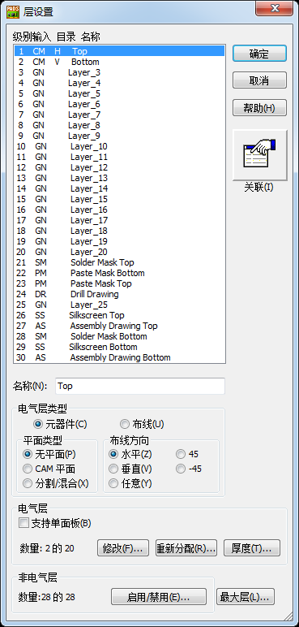
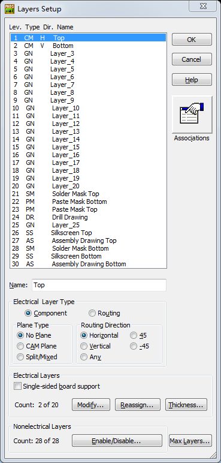
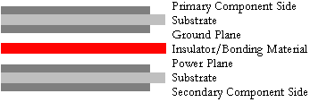
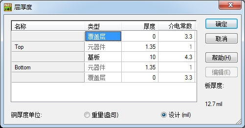
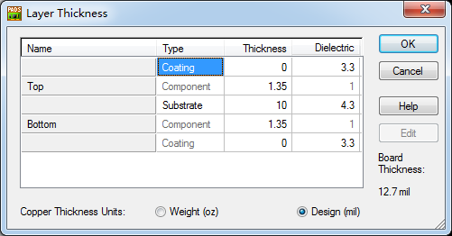
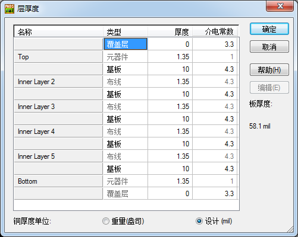
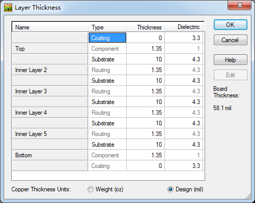
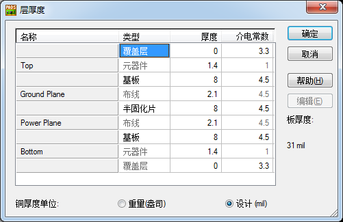
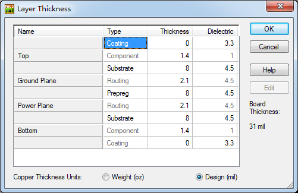

20160301
> Setup / Layer Definition
1 Top
2 Bottom
3 Layer_3
......
19 Layer_19
20 Layer_20
21 Solder Mask Top 阻焊层
22 Paste Mask Bottom 助焊层
23 Paste Mask Top 助焊层
24 Drill Drawing 钻孔
25 Layer_25 常规
26 Silkscreen Top 丝印
27 Assembly Drawing Top 装配图
28 Solder Mask Bottom 阻焊层
29 Silkscreen Bottom 丝印
30 Assembly Drawing Bottom 装配图




Electrical(电气层类型) :
---- Component(元器件)
---- Routing(布线)
Plane Type平面层类型有三种选项 :
---- No Plane(无平面层 or 非平面层)
---- CAM plane(CAM平面层)
---- Split/Mixed(混合/分割平面层)
所有的平面层一共分成两种层 : 特殊层和非特殊层
非特殊层指No Plane
特殊层指CAM Plane和Split/Mixed
No Plane
正片走线层,以正片的形式输出
通常用于所有走线层,包括Top、Bottom以及中间走线层(多层板中间有走线层，也要设成No Plane层)
可以分割平面，用Copper Pour灌铜
CAM Plane
内层负片层,输出菲林文件时以负片形式输出Gerber文件(占用数据量小)
通常用于内层的GND或Power平面.不能走线,也不能分割平面
层分割以2D线来实现，不用铺铜
因为这层是负片的整张铜皮，所以分配一个GND或VCC就可以，千万不要分多了网络！
但有一个缺点就是不会检查设计规则，即分配到这层的网络，就不会再检查安全间距及连接性等，因此，分割层需要自已保证无误
关于CAM Plane,因Verify Design 是侦测短路和开路, 要注意的事项会比较多, 其实最好是用Split/Mixed Plane 来
取代CAM Plane, 不然我们是必须在输出后的gerber data作详细检查, 是否有开路或短路, 焊盘是否小于孔径而引至短路,
是否有一些组件的只有孔而没有内层的焊盘等等
Split/Mixed(混合/分割平面)
正片层,以正片的形式输出 输出菲林文件时以正片形式输出Gerber文件
通常用于内层有几种类型的GND(如AGND、DGND)或有几种类型的Power(如+3.3、+5、+12)需要分割时.
可以分割平面,该层允许布线，用Plane Area分割区域.
需要铺铜，但其铺铜与No plane不同，
可以选择分割块按块铺，统一操作是在Tools/Pour Manager的Plane Connect页中操作,该层在进行规则校验时会检查规则。
>Tools / Pour Manager / Plane Connect / Start /看看效果
使用Mixed plane做GND或Power时，层分割过程可能会出层某一块铜皮被另一块铜皮全包围，或有重叠的情况，
进行pour 操作后，经常出现被覆盖的现象，在这种情况下，需要设置分割块的优先级别（flood priority），
级别越低，越优先铺铜，即重叠部分划归优先级别低的
这三种层类型主要的区别就是在铺铜上
NO Plane层铺铜的时候是用copper pour画铜皮区域，画好区域后再定义铜皮的网络，任意网络都可以定义。
CAM Plane要先定义好这层的网络，用2D线划分区域，不需要铺铜，工厂已反片的方式生产。（不建议用这种层）
Split/Mixed 需要先定义这个层的网络，在SETUP-->Layer Definition里面点击Assign，分配网络给混合平面层。
分配好后，通过工具栏的plane Area来划分铺铜区域。如果一个平面层有定义几个网络，就需要进行平面层分割了。
例如一个电源层，定义了5V和3.3V两个网络，我在这层铺铜的时候，就将一部分铜皮定义为5V，一部分为3.3V，这样就分割好了。
一般来说采用NO plane层或混合平面层，而混合平面层在给内层划分的时候会很方便。
Copper 铜箔
-------- 绘制一块实心铜，从而将覆盖区域内所有的连线和过孔连接起来，而不会考虑是否属于一个网络。
-------- 用途:芯片需要大面积覆铜来散热,电源连接处需要尽可能的宽,可以用Copper来实现,不具备自动避让功能
Copper Cut Out 铜挖空区域
Copper Pour 覆铜
-------- 仅仅连接有相同网络的过孔,可以通过这个来连接.用于no plane的,具备自动避让功能的。
不会自动移除独立焊盘,不可以在大块铜皮上进行其他网络的分割,也就是说不能出现大块铜皮包围小块铜皮的现象.可以走线。
Copper Pour Cut Out 覆铜挖空区域
Flood 灌注
Plane Area 平面区域
-------- 用于split/mixed平面类型的，必须使用内层分割命令Plane Area，可自动移除内层独立焊盘，可以方便的在大片铜皮上进行其他网络的分割，内层分割的智能化较高。可以走线
-------- Plane Area这命令只能在Split/Mixed(分割/混合)层才可以运用
Plane Area Cut Out 平面挖空区域
Hatch 填充
实际应用中，如果板子不是很大，且只是6层以下的板，把所有层都设为No plane也未尝不可，这样反倒灵活
入门者全部设置为No Plane,简单易学,只是数据量稍微大一些
Layers Setup
> Setup / Layer Definition / Modify(修改)... / 4 or 6 or 8 or N /
2层板层叠结构 :
Top ------------ Siganl 1 -------- 顶层信号层 -------- 重新命名Top为 : Primary Component Side(主元件面)
-------------------------------------------------------- Electrical Layer Type(电气层类型) : Component(元器件)
-------------------------------------------------------- Plane Type(平面类型) : No Plane(无平面)
-------------------------------------------------------- Routing Direction(布线方向) : Vertical(垂直)
Bottom -------- Siganl 2 -------- 底层信号层 -------- 重新命名Bottom为 : Secondary Component Side(次元件面)
-------------------------------------------------------- Electrical Layer Type(电气层类型) : Component(元器件)
-------------------------------------------------------- Plane Type(平面类型) : No Plane(无平面)
-------------------------------------------------------- Routing Direction(布线方向) : Horizontal(水平)
4层板层叠结构 :
Top ------------ Siganl 1 -------- 顶层信号层 -------- 重新命名Top为 : Primary Component Side(主元件面)
------------------------------------------------------ Electrical Layer Type(电气层类型) : Component(元器件)
------------------------------------------------------ Plane Type(平面类型) : No Plane(无平面)
------------------------------------------------------ Routing Direction(布线方向) : Vertical(垂直)
Inner 1 -------- GND ----------- 内电层地 ---------- 重新命名为 : Ground Plane(地平面层)
------------------------------------------------------ Plane Type(平面类型) : CAM Plane or Split/Mixed
------------------------------------------------------ Assign Nets(分配网络) / Select GND / ok / or / Select GND and AGND / ok /
------------------------------------------------------ Routing Direction(布线方向) : Any(任意)
Inner 2 -------- POWER --------- 内电层电源 -------- 重新命名为 : Power Plane(电源平面层)
------------------------------------------------------ Plane Type(平面类型) : Split/Mixed(分割/混合)
------------------------------------------------------ Assign Nets(分配网络) / Select 5V and 12V / ok /
------------------------------------------------------ Routing Direction(布线方向) : Any(任意)
Bottom --------- Siganl 2 -------- 底层信号层 -------- 重新命名Bottom为 : Secondary Component Side(次元件面)
------------------------------------------------------ Electrical Layer Type(电气层类型) : Component(元器件)
------------------------------------------------------ Plane Type(平面类型) : No Plane(无平面)
------------------------------------------------------ Routing Direction(布线方向) : Horizontal(水平)
6层板层叠结构 :
Top ------------ Siganl 1 -------- 顶层信号层1
Inner 1 -------- GND ------------- 内电层地
Inner 2 -------- Siganl 2 -------- 信号层2
Inner 3 -------- POWER ----------- 内电层电源
Inner 4 -------- GND ------------- 内电层地
Bottom --------- Siganl 3 -------- 底层信号层3
8层板层叠结构 :
Top ------------ Siganl 1 -------- 顶层信号层1
Inner 1 -------- GND 1 ----------- 内电层地1
Inner 2 -------- Siganl 2 -------- 信号层2
Inner 3 -------- POWER 1 --------- 内电层电源1
Inner 4 -------- GND 2 ----------- 内电层地2
Inner 5 -------- Siganl 3 -------- 信号层3
Inner 6 -------- POWER 2 --------- 内电层电源2
Bottom --------- Siganl 4 -------- 底层信号层4
Top ------------ Siganl 1 -------- 顶层信号层1
Inner 1 -------- GND 1 ----------- 内电层地1
Inner 2 -------- Siganl 2 -------- 信号层2
Inner 3 -------- GND 2 ----------- 内电层地2
Inner 4 -------- POWER 1 --------- 内电层电源1
Inner 5 -------- Siganl 3 -------- 信号层3
Inner 6 -------- GND 3 ----------- 内电层地3
Bottom --------- Siganl 4 -------- 底层信号层4
设置层的厚度(Layer Thickness)和叠层(Stackup)参数
四层板的层物理Stackup(叠层) :
由两个表面都有铜的、中间为玻璃纤维的双面板，将它们中间再放置一些绝缘的半固化片压制而成

>Layer Setup / Thickness...厚度.../
将铜厚单位(Copper Thickness Units)设置为 : Design(mil)
不要设置为 : Weight(oz)重量(盎司)
1盎司 = 28.349523克
16盎司 = 1磅（pound）
2层




6层
Top层Primary Component Side(主元件面) 元器件Component 厚度Thickness 之间设置为 1.4
Inner 1 Ground Plane(地平面层) 布线Component 厚度Thickness 之间设置为 2.1
Inner 2 Power Plane(电源平面层) 布线Component 厚度Thickness 之间设置为 2.1
Bottom层Secondary Component Side(次元件面) 元器件Component 厚度Thickness 之间设置为 1.4


类型(Type)区域，在Ground Plane(地平面层)与Power Plane(电源平面层)层之间选择 : 半固化片(Prepreg)
分别设置其他层为 : 基板(Substrate),并且设置各个介电常数(Dielectric)为 : 4.5
1-2，2-4，2-7，5-7，7-8，1-8.L3-GND,L4-VCC.
在PADS Layout中，不管用于电源的内层分割还是混合电气层，都要用正片来做，
而普通的正片（NO PLANE)与专用混合电气层（SPLIT/MIXED）的唯一区别就是铺铜的方式不一样！
负片只能是单一的负片。
（用2D LINE分割负片的方法，由于没有网络连接和设计规则的约束，容易出错，不推荐使用）
这两点是它们在图层设置与内层分割方面的主要区别。
思路：
1.首先，采用四层板子来制作，分别为:top gnd power bottom
分别对应类型为：no plane split/mixed split/mixed no plane四种类型；
2.然后，对于gnd进行两个地的分割划分；对于电源也进行几个电源的分割区域划分（plane area的方式）；
对于top和bottom两个走线层，也进行必要的划分区域（灌铜的方法不影响走线的）来进行；
VCC和GND层设置为NO PLANE ,cam plane还是split/mixed plane
NO PLANE主要用于小面积铺铜,而且铺铜区的连线比较多(TOP,BOTTOM)
split/mixed plane主要用于面积比较大的铺铜,专门给VCC和GND层,这些层连线不多,
主要通个整个平面连接,可减少电源和地的波动所以用PLANE大面积铺铜比较合适